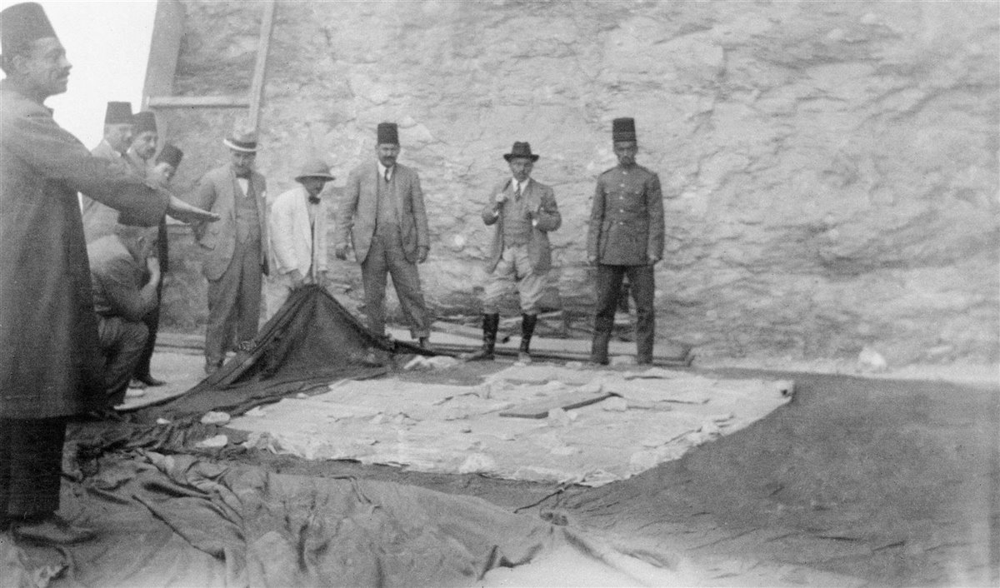
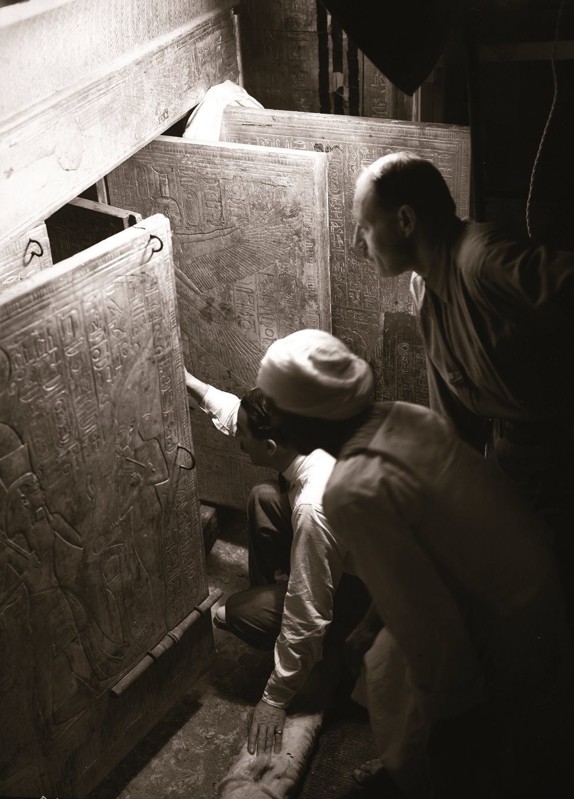
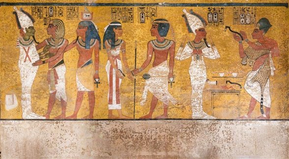
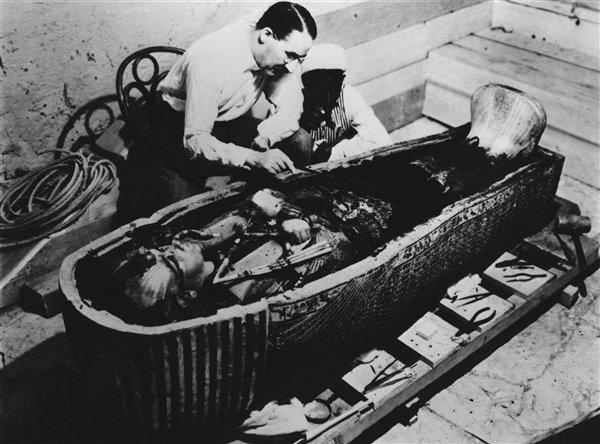

Poco después del descubrimiento de la tumba de Tutankamón en 1922, una serie de muertes desataron la idea de una maldición oculta que perseguiría a quienes habían osado profanar la tumba del rey. Sin embargo, el microbiólogo Raúl Rivas cree que ciertos hongos pudieron ser los causantes de la muerte de algunos de los presentes en la apertura de la tumba, como lord Carnarvon
Entrando en la sala donde se encontró el sarcófago de Tutankamón Entre 1922 y 1929, el fotógrafo Harry Burton documentó meticulosamente el descubrimiento de la tumba de Tutankamón.
En el muro norte de la cámara funeraria de Tutankamón se pueden observar 7 figuras, en tres escenas separadas. De derecha a izquierda: ceremonia de apertura de la boca practicada a la momia de Tutankamón por el faraón Ay, su sucesor, quien sostiene un instrumento especial (azuela) y está vestido como un sacerdote; Nut, la diosa del firmamento, da una pacífica bienvenida a Tutankamón, y, por último, Osiris, dios del Inframundo, abraza a Tutankamón, que aparece seguido por su ka o fuerza vital.
"La muerte extenderá sus alas sobre todo aquel que se atreva a entrar en la tumba sellada de un faraón". Esta antigua maldición, que supuestamente estaba escrita en un antiguo texto árabe, se encontraba en poder de la novelista Marie Corelli, que la recordó al enterarse de la muerte de lord Carnarvon en su hotel de El Cairo en 1923. La escritora, muy popular en Gran Bretaña por sus obras góticas, ya había avisado de que posiblemente la tumba recién descubierta del faraón niño pudiera hallarse bajo algún tipo de protección mágica, y cuando supo de la enfermedad de lord Carnarvon afirmó: "No puedo dejar de pensar que ha corrido algún riesgo al perturbar el descanso final de un rey de Egipto cuya tumba estaba especial y solemnemente custodiada y robarle sus posesiones". Cuando el aristócrata murió poco después, sus palabras fueron consideradas proféticas.
En relación a estas muertes y sobre si es posible que estuvieran relacionadas con la tumba, aunque por supuesto no con una maldición, el microbiólogo Raúl Rivas sugiere que la explicación podría encontrarse en microorganismos dormidos durante milenios, como algunos hongos de la especie Aspergillus, cuyas esporas pueden permanecer viables durante siglos o incluso milenios.
Estudios recientes han constatado la presencia de este tipo de hongos sobre diversas momias en todo el mundo, lo que, según Rivas, haría factible que algunos de los visitantes de la tumba de Tutankamón –posiblemente quienes tuviesen una salud más débil– hubieran podido contraer una infección, como lord Carnarvon o como George Jay Gould, el magnate de los ferrocarriles, que murió de una neumonía en 1923 y que había estado presente en la apertura de la tumba.
Afortunadamente, hoy ya nadie (o casi nadie) cree en maldiciones faraónicas ni teme a la momia de Tutankamón, que descansa en su tumba en un sarcófago de cristal sellado en un ambiente controlado, a la vista de los miles de turistas que la visitan a diario sin que ningún percance les suceda. Pero a pesar de ello, no cabe duda de que la historia del descubrimiento de la tumba del faraón niño y de la maldición que la acompaña ha adquirido tintes novelescos y sigue despertando pasiones entre los amantes del Egipto faraónico.
Actividad 7 - Metro de Moscú Inicio Unidad 2